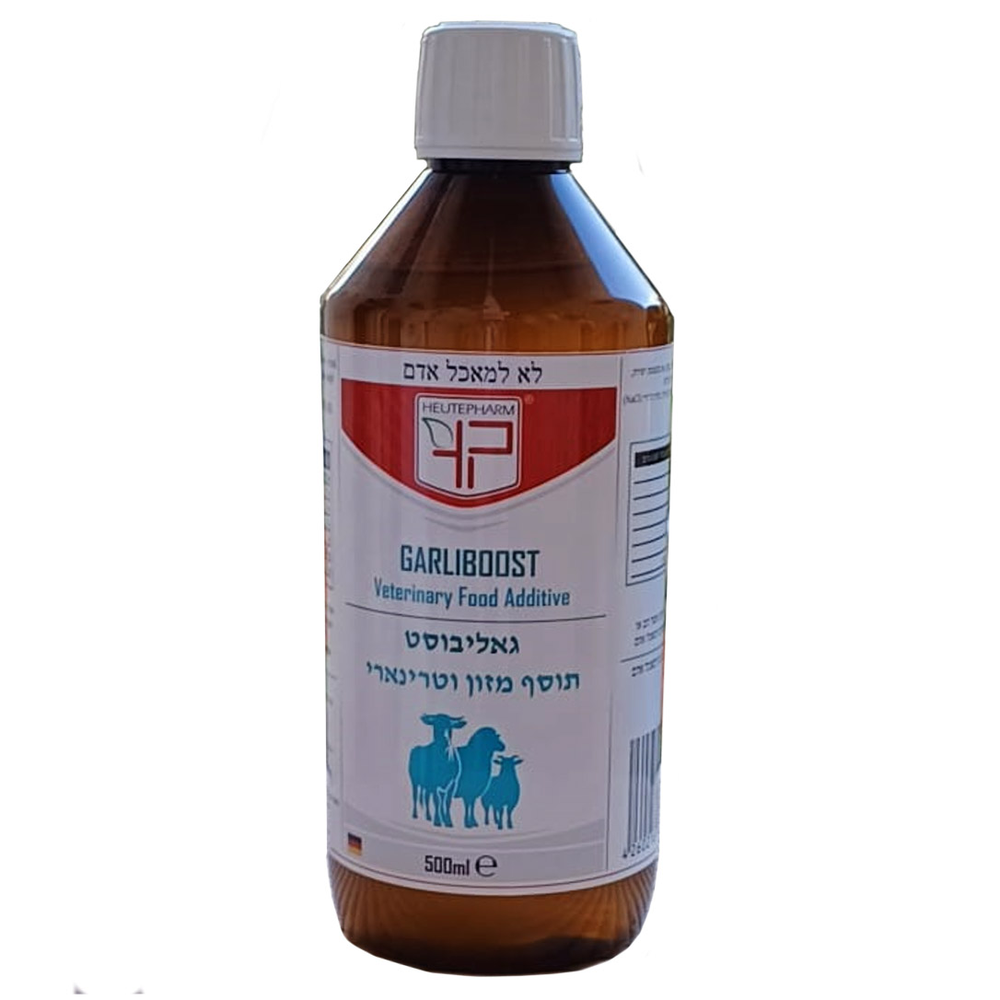

Подготовьте дозу
Рассчитайте общее количество на 7 дней: 1 мл на каждый 1 кг массы животного.
500 мл / Для сельскохозяйственных животных
Garliboost — дополнительный корм с чесночным аллицином для коров, телят, свиней, коз и овец.

01 / Описание продукта
В основе Garliboost — жидкий чесночный аллицин. Дополнительный корм вводится в рацион сельскохозяйственных животных с водой или кормом. Формат 500 мл удобен для хранения и дозирования.
02 / Применение продукта
По этикетке: общее количество на 7 дней — 1 мл на 1 кг массы тела. Разделите его на 7 равных суточных доз, каждую — на два равных приёма. Не превышайте рекомендованную дозировку.
Рассчитайте общее количество на 7 дней: 1 мл на каждый 1 кг массы животного.
Разделите суточную дозу на два равных приёма. Давайте с водой или кормом.
От +5 °C до +25 °C. После вскрытия — в холодильнике.
03 / Отзывы фермеров
Посмотрите видеоматериал о продукте и узнайте больше о его применении в хозяйстве.
02:13 · Предоставленное видео
«Лечение показало улучшение всех показателей здоровья коровы, включая активность рубца, потребление корма, надои, температуру тела и общую активность».
Доктор Офер Стойер · Из письма о применении под торговым названием «Ольтермаст». Наблюдение за тремя коровами; индивидуальный опыт, не гарантия результата.04 / Связаться с нами
Задайте вопрос о продукте или оставьте заявку на поставку Garliboost для вашей фермы или компании.